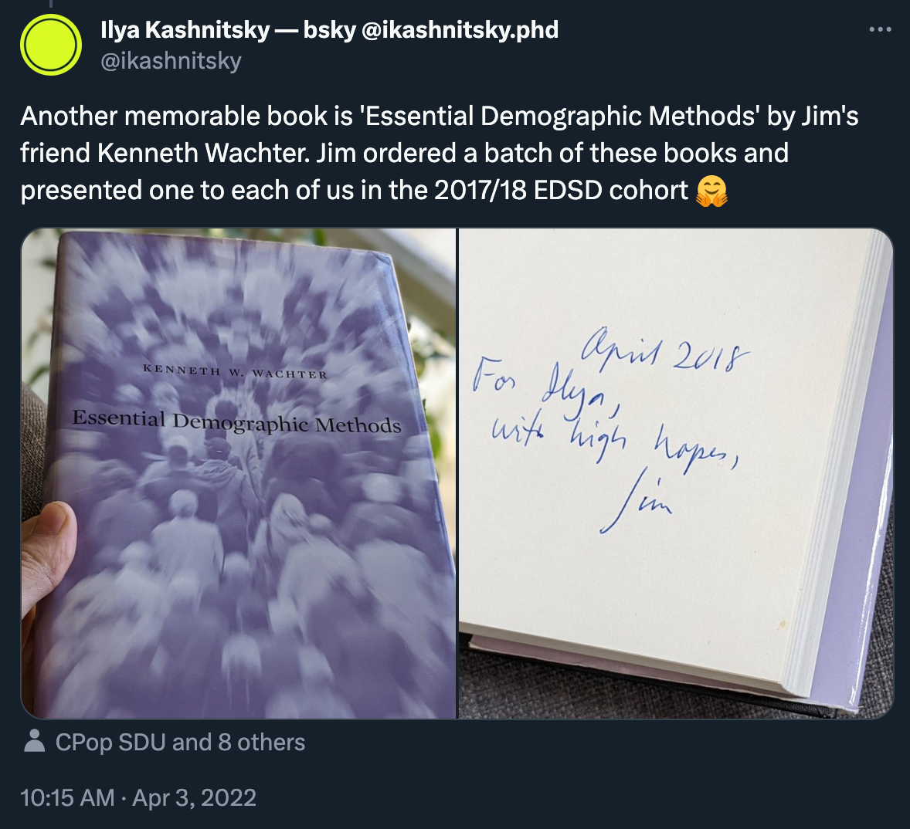
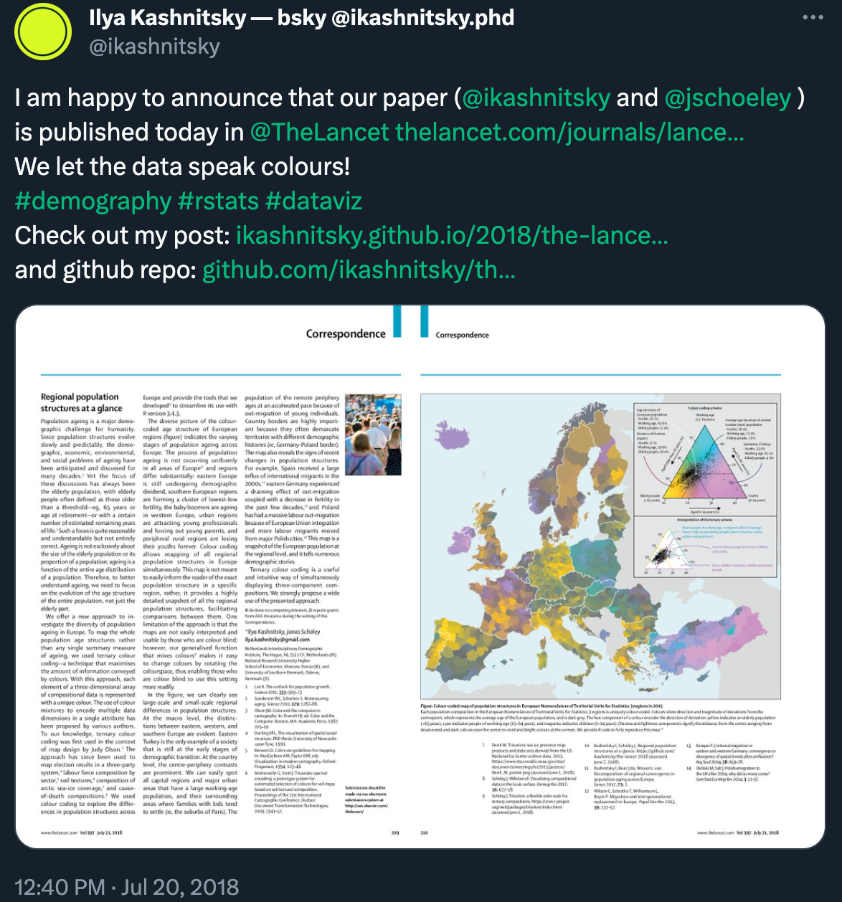
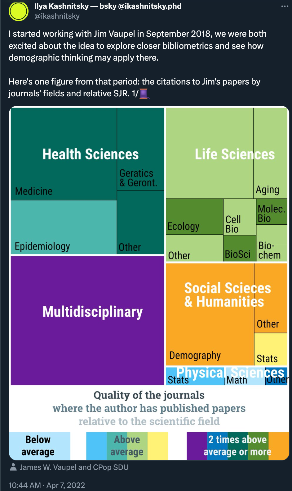
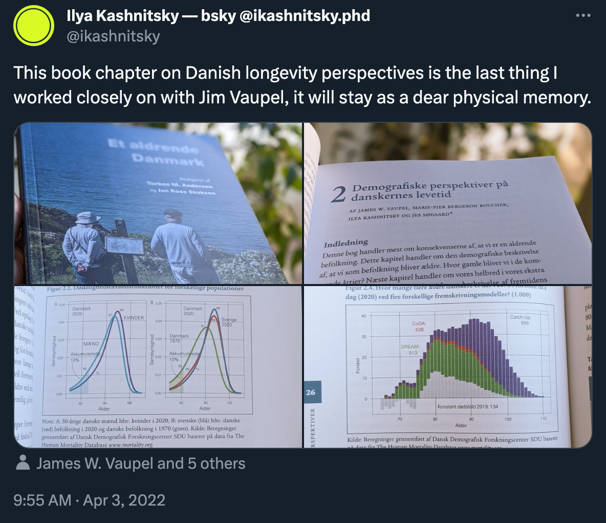

What is your BIG question?
I first saw Jim in June 2014 in Budapest, at the European Population Conference. I had just finished my master’s and was about to start a Ph.D. in the Netherlands. The world of European demography felt novel, unexplored and shining. There I met some EDSD students from a fresh cohort and with a touch of jealousy I realised that I was apparently missing such a unique opportunity. Then we were walking in the afternoon sunlit Budapest, and suddenly they started whispering «Look! Jim Vaupel!». Jim was walking surrounded by a tight pack of people, talking animatedly and laughing contagiously. There was such a powerful «live legend» aura around him. That was it for several years. Only the excited whisper «Jim Vaupel» cut deep in my memory. I even asked back then «Who is Jim Vaupel?». And the answer was something like «he founded everything, including EDSD».
The next time I interacted indirectly with Jim was in October 2016. A horrible paper arguing the existence of a limit to human lifespan came out in Nature and immediately made a lot of noise. An editor of the science section of Meduza (a prominent independent media source in Russia) asked me to comment on this paper, a legit newsmaker of the first days. And here I was, a second-year Ph.D. student reading a paper from Nature and concluding that it was pure bullshit. The editor was slightly puzzled. Luckily on the next day, I brought him a link where Jim Vaupel himself called this paper a «travesty». Eventually, 5 outraged letter responses were published in Nature, mine was rejected on the basis that the journal had received too many submissions for this particular paper. I was yet to learn how to collaborate on the ideas.
Finally, at the beginning of our EDSD cohort in September 2017 we had a welcome meeting scheduled to meet Jim Vaupel—somehow, I managed to miss that one too. At the same exact time as the meeting I had to deliver a presentation at the Statistics Week Conference that happened to be in Rostock that year. So instead I had an email introduction apologising for having to miss the meeting. Jim replied immediately saying that conferences are important and we would have time to talk in Odense.
Finally, after years of missing the chance to speak to him, I met Jim in Odense in November 2017, where Jim was teaching us about the regularities of human mortality. Jim’s teaching style was pretty unique: most of the time he just opened his own published papers and scrolled through them, commenting. Doesn’t sound too fascinating, right? Wrong. It was enlightening and inspiring. Rarely as a student do you know clearly that you are lucky to be here. Jim’s assignment was very creative: come up with our own model to explore some demographic processes. As he told us instructing on the assignment: «Model simple, think complex!», one of the many wonderful sayings he imparted on us through the years, like «Do not read too much. Think!» or «You should spend one third of your time working on a paper choosing a good title and composing a great opening phrase!» or «You should re-write your paper 17 times; only then it’s done». Perhaps, the most memorable was when he was telling us what science knows about the ways to prolong own lifespan: «Do what your mom told you: clean teeth, go to bed in time, eat healthily, wear a warm woolen hat when it’s cold, do sports, don’t smoke, don’t drink much alcohol». There was something puzzling and exciting about one of the leading mortality researchers telling you that we don’t know much more than the common sense hard learned basics. And this honesty marked a true explorer not afraid to say «I don’t know», «we don’t know yet». He was in an honest search for answers to the questions that burned his curiosity. The main message of his teaching was «What is your BIG question? Do find the biggest question that fires you up and spend your honest efforts trying to answer it. Don’t spend your life on small questions».
Towards the end of our EDSD in Odense Jim ordered a big batch of books ‘Essential Demographic Methods’ by his friend Kenneth Wachter. He presented each of us with a signed copy of this beautiful book.

In early spring 2018, I brought the innovative ternary dataviz that we developed with Jonas to Jim.
– Oh, great. This is curious. Where do you want to submit it?
– Science.
– Oh boy! Ilya, I don’t want to discourage you—and this map is exciting—but I think that you have zero chances in Science.
– Hmm. I think so too. I will still try.
– Okay. Then, you should write your first paragraph in a way that…
And then Jim spent 15 minutes explaining to me how you write papers for the big journals. I submitted it to Science and was desk rejected in two days. Then I submitted it to Nature and it was desk rejected in one day. Then I submitted it to Lancet. And after a frustrating month, it was accepted. I came to Jim with the burning news.
– Jim, the letter is accepted in Lancet.
– Wow! Good for you!
The same day Jim asked me to come to his office, a beautiful spacious room in the always sunlit corner of the building.
– Congratulations on your Lancet publication. I award you a place of a research assistant in my group.
And that was typical Jim. He considered working with him as a privilege, and so it was.

I started working with Jim in September 2018. It was very uneven, sometimes very intense, other times more relaxed. If Jim got a new idea he was obsessed with it. His flying scientific imagination coexisted with exceptional attention to details. Jim loved delivering his ideas efficiently and he valued dataviz a lot. I have a passion for dataviz. There were months in which I would produce dozens of versions of various plots reflecting the flow and evolution of Jim’s ideas. At times that was borderline frustrating. But there was one constant laying feature of this process: Jim always listened to you in the discussions and honestly strived for the best possible outcome. His drive and energy and the constant feeling that we are moving to something even better were dope. And if I strongly disagreed on something and it made sense, Jim listened and was able to correct his view, no snobbism or condescending involved.
Jim was always proud of us, the young ones privileged to work with him. He used to say «I have the best demographers in the world» presenting his team anywhere. This was too American. Jim didn’t care. He was unapologetically himself. And with him around and his eternal confidence we got used to hearing his usual «top of the world» mantra but also learned to set the highest goals and pursue sometimes wild ambitions. Only big questions, only big goals.
In my first months with Jim we did a crazy detour from demography to bibliometrics. Jim was fascinated to learn that the famous demographer Alfred Lotka wrote a seminal paper in bibliometrics in 1926. Jim immediately called that we should explore bibliodemography—the study of the births, lives, and deaths of publications.

Our work on this detour culminated with a strange meeting with the rector to discuss some aspects of research evaluation based on publications and citations. We got a time slot at 7:45 in the morning. The day before I was still finishing slides. Jim was very nervous that I wouldn’t finish in time. When I finally showed him the slides late in the afternoon he said with a smirk «You can’t lecture the rector». In the end, we decided that we would go with the printouts of my text and dataviz report. And it was a good decision. Though Jim was still visibly nervous and uneasy.
– Jim, do I need to know something special about the rector or the meeting?
– No, nothing special. Just strange that you are so calm.
Only later I guessed that this meeting was aimed to explain the unique interdisciplinary nature of our research group and the position Jim envisioned for our centre in between all the faculties. The meeting went smoothly but the big idea of CPop as a truly interdisciplinary centre uniting the faculties was destined to sink into the bureaucracy at the university. Jim hated losing time in unconstructive management meetings. In the end, he stepped down from the director of the centre position to finally focus on research and immediately won an ERC Advanced Grant. And then the pandemic came.
The remote setting really didn’t fit Jim’s impulsive nature. For once–he probably felt–demography and the analysis of human mortality in particular was in the centre of everyone’s attention. And we were in between other important projects and ideas, not perfectly ready to refocus and immediately deliver. We did it but mostly in summer of 2020 when it became possible to meet in person—Jim was revived in face-to-face talks.
Jim was on my Ph.D. committee in October 2020. It was a Dutch-style defense when the candidate only answers questions for 45 minutes. The goal of the candidate is not to go on the second round of questions, which are traditionally harder and more specific. Jim’s question was the last among the six. Somehow, I had failed to guess his usual question and had to ad lib, even though he asked his single most important question—what was the BIG question in my research project? Even now I recall how nervous I was then, and how I didn’t manage to speak smoothly. It was a huge relief to learn some days later that Jim was properly satisfied.
The last thing I worked on closely with Jim was a book chapter on Danish longevity prospects which he asked Marie-Pier and me to help him with, in September-October 2021. Of course, the book chapter appeared out of the blue and had to be finished «this Friday». Of course, it was done in several weeks. Of course it came on top of everything. Finally it was done by the end of October. Then I was away for months, recovering from sudden health issues. Then I started returning back, and now Jim was away, eagerly awaited to return with his usual excitement and new ideas. And then suddenly he was gone.
The book containing our chapter arrived the following week. I never thought that this was to become my last reminder of working with Jim.

Jim was an exceptional teacher and colleague, always a bit more than just your boss or senior coauthor. Always understanding but crashing the schedules and others’ perception of what’s possible with his enthusiasm. Always knowing exactly where he was heading and how he wanted to get there but listening carefully to what others had to say, especially if that was a carefully thought-through contradicting point. Jim was big. A living legend of demography, he could have just relaxed a bit. But that’s not how he lived. He always thought that the idea that occupied his mind right now was the next BIG idea, even more significant than the previous ones.
I’m trying to think what’s my most vivid memory of Jim. And I think I know: sunlit spacious room with plants and photos of beloved grand-kids, Jim is sitting at the small round guest table facing the door and the corridor, only a sheet of paper in front of him and a pen in his hand.
– Jim, can I discuss an idea with you?
– Of course, my friend. Come in. I was doing some maths here. You know, maths makes me happy.